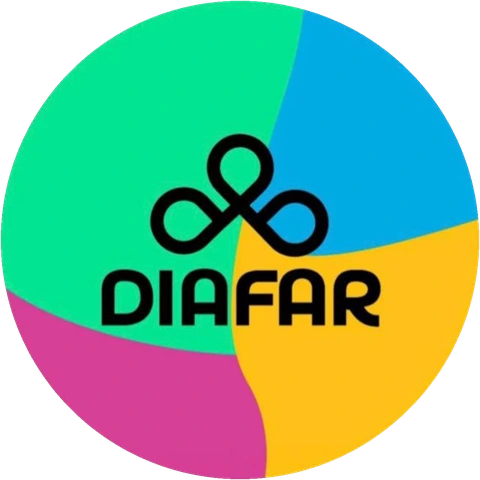

Modo antirracista: ¿dónde aparece el racismo?
¿Creés que podés reconocerlo?
El racismo no siempre aparece de forma evidente. A veces está presente en comentarios, costumbres y situaciones que tenemos tan naturalizadas que nos cuesta reconocerlas.
Te proponemos cinco situaciones para poner a prueba lo que sabés, cuestionar algunas ideas y descubrir dónde puede aparecer el racismo.
Si querés profundizar en esta situación, mirá este capítulo de la serie de DIAFAR.
Ver el capítulo en YouTube (se abre en otra pestaña)Cierre
¿Cuánto de lo que consideramos normal merece ser cuestionado?
El racismo no se limita a las agresiones explícitas ni a las actitudes individuales. También se reproduce en las instituciones, los discursos, las representaciones culturales y las formas en que construimos nuestra identidad como sociedad.
Reconocer estas prácticas es un primer paso para cuestionarlas y transformarlas.
Seguí aprendiendo con DIAFAR
Te invitamos a conocer nuestra serie de capítulos y profundizar en las distintas formas en las que se manifiesta el racismo en Argentina.